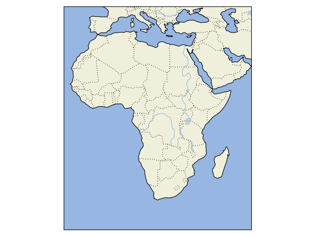

What’s new in Cartopy 0.6
| Release: | 0.6.0 |
|---|
| Date: | 19 Feb 2013 |
|---|
- Patrick Peglar added the ability to draw ticks for some limited projections
when using the gridlines() method on an Axes.
- Phil Elson and Carwyn Pelley extended the cartopy documentation to include
new tutorials such as Using the cartopy shapereader.
- Ian Edwards added a new example to create a favicon for cartopy.
- Phil Elson added a new example to show polygon analysis
and visualisation with Shapely and Cartopy.
- Edward Campbell added a new cartopy.crs.EuroPP projection for UTM zone 32.
- Andrew Dawson added a central_longitude keyword for the Stereographic family of projections.
- Phil Elson added a Downloader class which allows
automatic downloading of shapefiles (currently from Natural Earth and GSHHS).
The extension requires no user action and can be configured via the cartopy.config dictionary.
Development plans for Cartopy 0.7 and beyond
- Improve the projection definitions to support better control over datum definitions
and consider adding WKT support (ticket).
- Begin work on vector field support (barbs, quiver, streamlines etc.).
- Continue identifying and implementing performance enhancements (particularly in contour drawing).
- Extend the number of projections for which it is possible to draw tick marks.
What’s new in Cartopy 0.5
| Release: | 0.5.0 |
|---|
| Date: | 7 Dec 2012 |
|---|
This document explains the new/changed features of Cartopy in version 0.5.
Release 0.5 of Cartopy continues the work to expand the feature-set of
Cartopy to encompass common operations, and provide performance
improvements.
Cartopy 0.5 features
A summary of the main features added with version 0.5:
- An improved feature API to support future expansion and
sophistication, and a wider range of pre-defined Natural Earth
datasets.
Incompatible changes
None
Deprecations
- The method Axes.natural_earth_shp() has been replaced by the
method Axes.add_feature() and the cartopy.feature
module.
Feature API
A new features api is now available, see Using the cartopy shapereader.
import cartopy
import matplotlib.pyplot as plt
def main():
ax = plt.axes(projection=cartopy.crs.PlateCarree())
ax.add_feature(cartopy.feature.LAND)
ax.add_feature(cartopy.feature.OCEAN)
ax.add_feature(cartopy.feature.COASTLINE)
ax.add_feature(cartopy.feature.BORDERS, linestyle=':')
ax.add_feature(cartopy.feature.LAKES, alpha=0.5)
ax.add_feature(cartopy.feature.RIVERS)
ax.set_extent([-20, 60, -40, 40])
plt.show()
if __name__ == '__main__':
main()
(Source code)
